TinyMakerWifi › Resins › What's next
Printing is the easy half. The resin tests show parts that leave the build plate intact and then fail afterwards, during washing and drying.
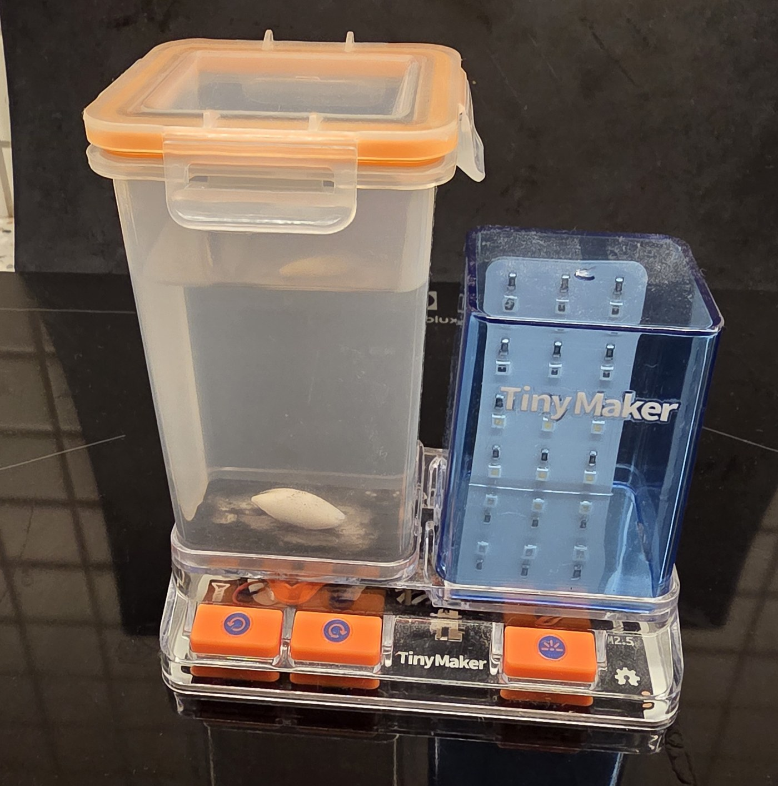
Fine lattices break apart after washing. Anycubic Water-Washable black is the clearest case so far: the cubes came off the plate intact and survived the wash, then cracked and crumbled while drying, before any curing had started.
Anycubic's own instructions state that a part has to be dried before it is cured, otherwise it absorbs water and cracks. No times are given. That is the gap: the print settings are measured, and everything after the print is not.
Post-processing needs the same treatment the print settings already had: measured values per resin, not advice.
Those numbers only mean something if every run is identical, which is why the two steps the station does handle, wash and cure, are being automated rather than timed by hand.
The first stage runs on an off the shelf ESP32-C3 module with a 0.42 inch display, 72 x 40 pixels. It drives the wash motor and the UV array, and joins the network as curing.local.
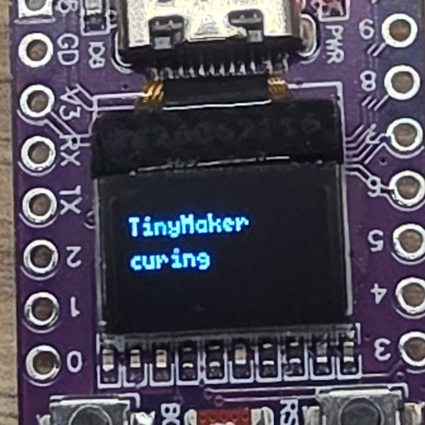
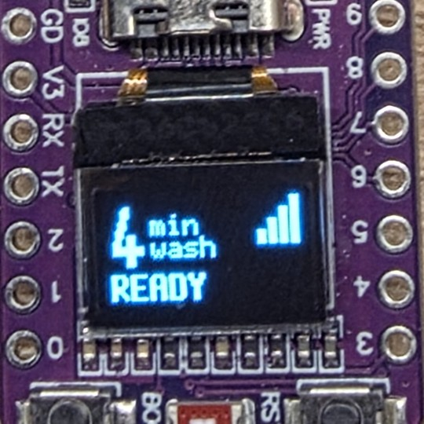
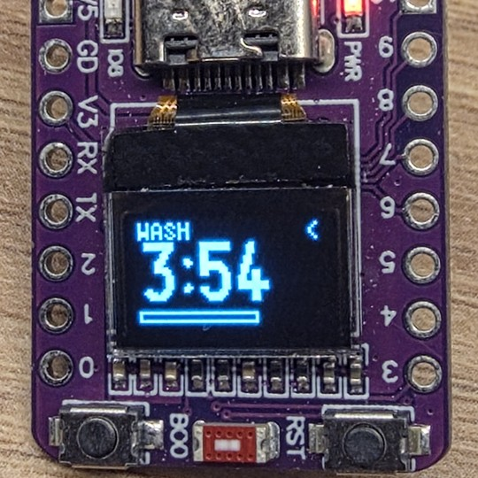
On the final board the module is no longer a separate part. The same chip, the same display and the motor drivers move onto one board, in the space the original electronics already use.
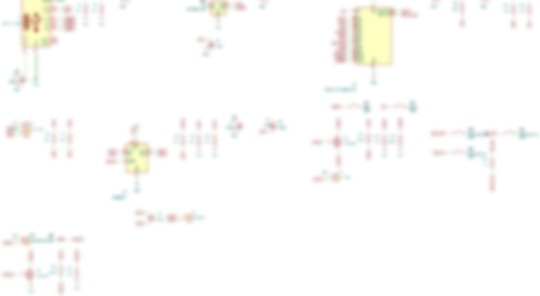
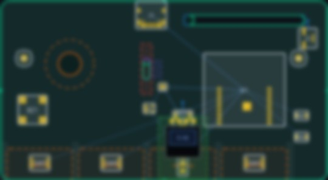
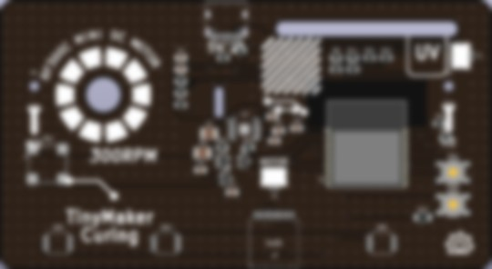
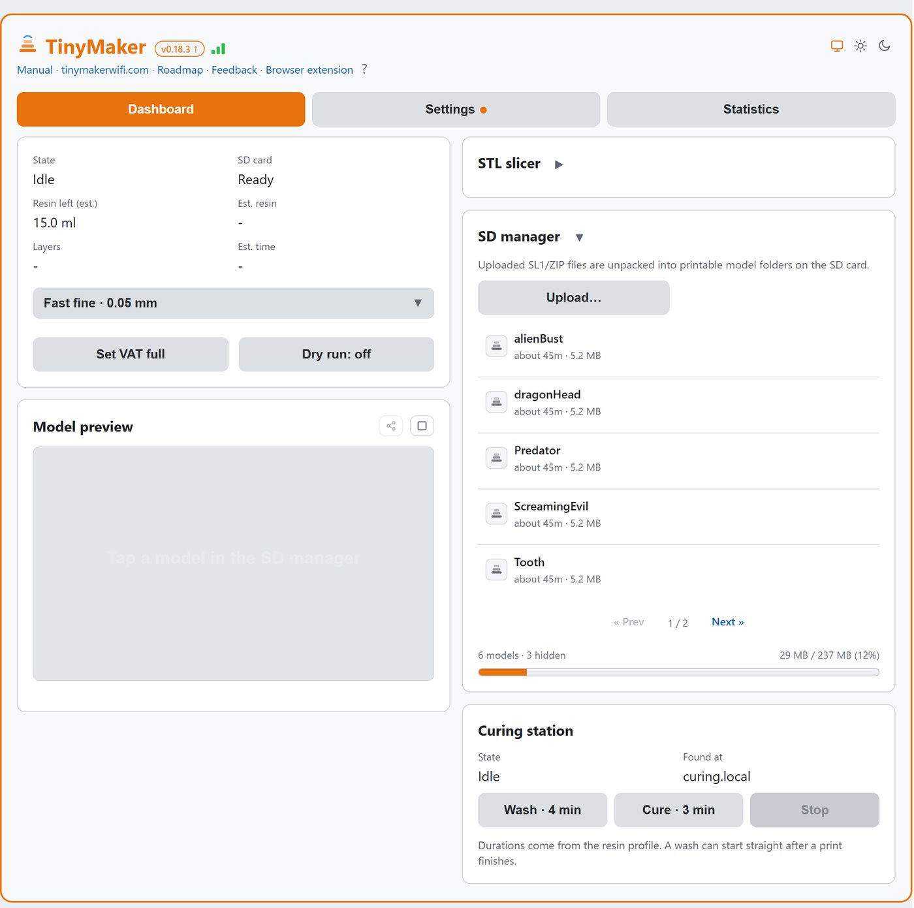
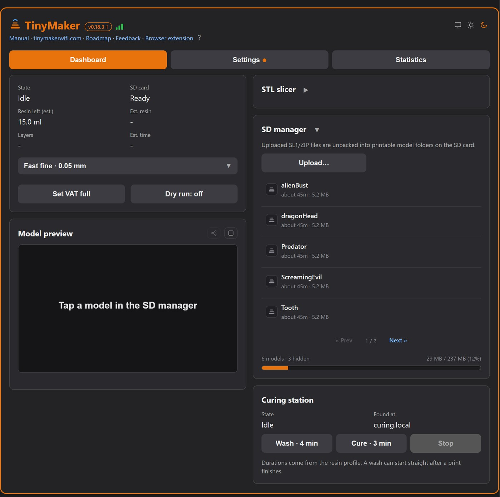
The point is not the buttons. The station is tied to the resin profile, so picking a resin is what sets the times, the same way the profile already sets exposure.
That means the resin profile needs two more fields. This page does not exist yet; below is what it would look like, added to the settings page the printer already has.
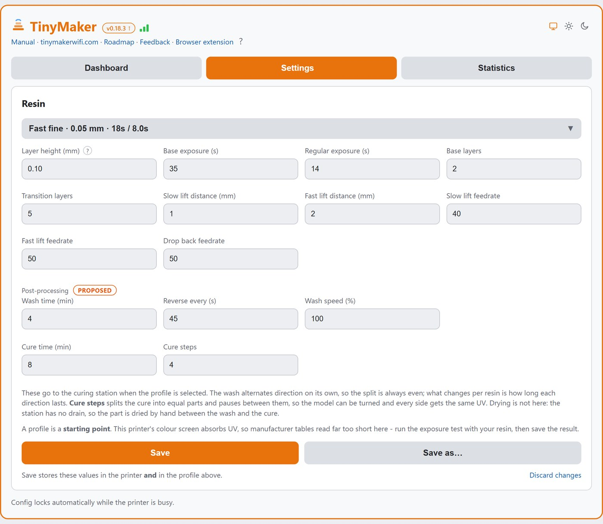
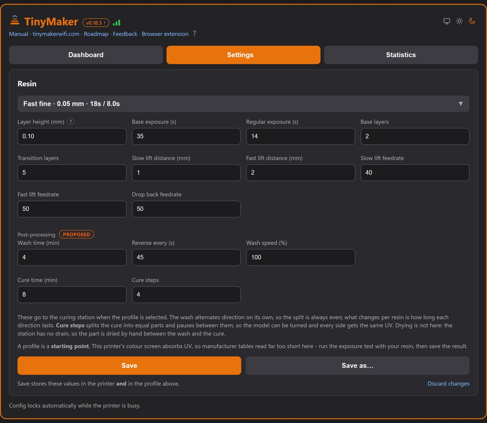
Further out, and only if it turns out to be needed: the suggested times could also take into account how fine the model is.
A printed storage box for the resin vat is already published: TinyMaker vat storage box on MakerWorld.